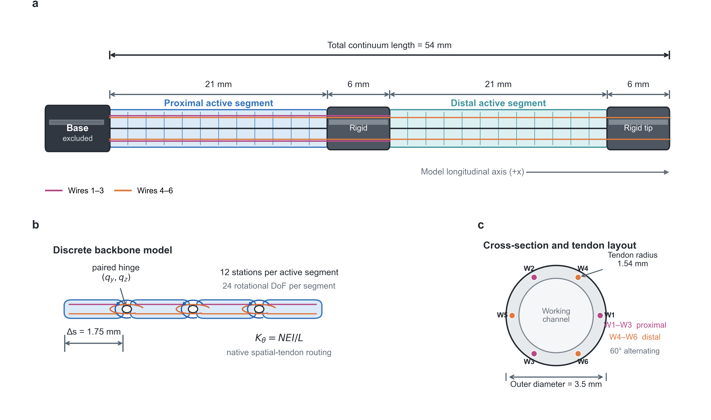

Coupled TDCR model
双主动段、六腱连续走线和可调被动导管组成统一机器人模型。
ICRA MANUSCRIPT IN PREPARATION · INTERACTIVE PROJECT PAGE
基于 MuJoCo 的双段腱驱连续体支气管镜建模、控制与腔道导航平台
Bronchoscope Continuum Robotics Project
INTERACTIVE DEMO
拖动双罗盘控制两段连续体，使用插入滑块推进机器人。物理由浏览器内 MuJoCo WebAssembly 实时求解。
首次打开需下载 MuJoCo WASM 与肺部模型
Interactive demo. Web 场景使用项目的双段标准 MJCF：24 个正交弯曲关节、6 根空间腱、一个插入自由度。肺部 STL 作为半透明解剖环境显示；浏览器版本不启用桌面端弹性插件与真实设备驱动。
ABSTRACT
本项目研究一种面向支气管腔道导航的双段腱驱连续体机器人。参数化 MuJoCo 模型将两段主动结构离散为正交转动关节，通过六根空间腱表达驱动与段间耦合，并将被动导管、插入运动、肺部环境和 tip camera 统一在同一仿真工作流中。研究平台进一步连接罗盘／手柄控制、中心线路径、自动导航与同步数据记录，为运动学控制、接触调试和视觉导航研究提供可复现基础。
双主动段、六腱连续走线和可调被动导管组成统一机器人模型。
近端、远端罗盘与插入轴直接映射到 tendon 和 slider actuator。
MuJoCo WebAssembly、双视角渲染与实时遥测组成可复现的在线仿真环境。
SYSTEM MODEL
每个 21 mm 主动段包含 12 个离散弯曲站；W1–W3 驱动近端段，W4–W6 贯穿两段并驱动远端段。

PAPER & CODE
关联 ICRA 论文仍在准备中，尚未发表。论文标题、作者列表、预印本和引用信息将在正式公开后更新；当前仓库提供完整研究程序、模型、控制模块与网页仿真代码。